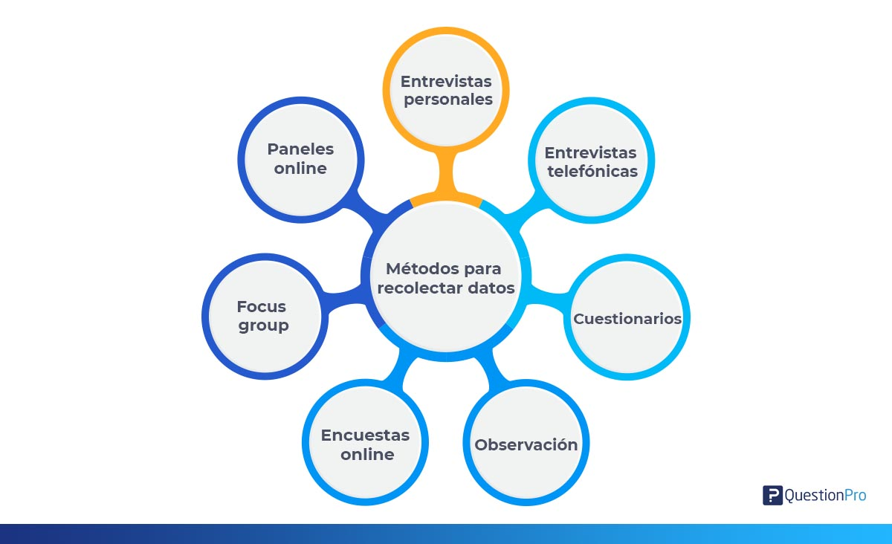

Nuestra aplicacion le permitira a la institucion educativa tener una mejora en la gestion y organizacion de datos. Con la aplicacion el docente:
Podra evitar tener que ir a cada salon con hojas llenas de listas y notas, puesto que la aplicacion le facilitara el acceso a estas.
Podra actualizar las notas de una manera efizaz y sencilla gracias a la interfaz que se maneja.
Se tendra un mejor control sobre el estudiante, relevante a faltas de comportamiento o a inasistencias.
La aplicacion para dispositivos moviles le permite hacer lo mismo que en la aplicacion de escritorio pero en este cambios se encuentra como una ayuda al docente, en caso de que deba realizar unos cambios rapidos en las notas o la asistencia de algun alumno pueda realizarlo de manera optima.
Nuestra aplicacion le permitira a la institucion educativa tener una mejora en la gestion y organizacion de datos. Con la aplicacion el estudiante:
Estara informado de que evento y horario tendra en toda la jornada.
Podra visualizar sus notas y observador.
Se informara sobre las aulas, sabra que profesor esta en la aula y cuanto tiempo.
Nuestra pagina web les permite a los usuario solicitar una ayuda sobre la aplicacion, si tienen algun problema con la contraseña por medio la pagina web lo pueden resolver, y ya si los estudiantes desean visualizar sus notas esta es una herramienta que les facilitara eso.
Es responsable de detectar las necesidades de los usuarios y gestionar los recursos económicos, materiales y humanos, para obtener los resultados esperados en los plazos previstos y con la calidad necesaria. Es la persona que tiene la responsabilidad total del planeamiento y la ejecución acertada de este proyecto.
Leydi Marcela Galeano Sanchez
322-353-5015
lmgaleano88@misena.edu.co
Compromiso
Coordinación
Capacidad de delegar
Capacidad de comunicación
Visión, intuición y creatividad
Es un arquitecto de software, se encarga de que la aplicación o web funcione correctamente, que sea segura, que soporte el paso del tiempo, que sea fácilmente modificable y adaptable.
¿Por qué es necesario contar con un desarrollador?
Porque los proyectos webs se llevan a cabo con la finalidad de mejorar
la experiencia del usuario en el entorno digital con su entidad.
Miguel Angel Sanchez Merchan
301-605-9724
miguelangel20012017@gmail.com
Habilidades técnicas
Intuición
Adaptabilidad
Actitud positiva
Habilidades de comunicación
Están constantemente detrás del usuario. Por ello, resulta indispensable contar con un analista que interprete los datos para poder establecer patrones en el comportamiento del cliente.
Santiago Andres lopez Buitrago
Nicolas Sebastian Guarnizo Caceres
305-463-5367
313-213-5430
santeritolopez@gmail.com
nicoguarnizo@gmail.com
Extraer
Procesar
Agrupar datos
Generar informes
Analizar agrupaciones de datos
La recopilación de datos permite a un individuo o empresa responder a preguntas relevantes, evaluar los resultados y anticipar mejor las probabilidades y tendencias futuras.
Existen diferentes métodos y técnicas de recolección de datos que te pueden ser de utilidad. La elección del método depende de la estrategia, el tipo de variable, la precisión deseada, el punto de recolección y las habilidades del encuestador.
Cristian Camilo Alfonso Guayazan
320-485-0958
chris.agalfonso@gmail.com
Mejoras
Estrategias
Exactitud en la reunión de datos
Integridad
Decisiones acertadas
